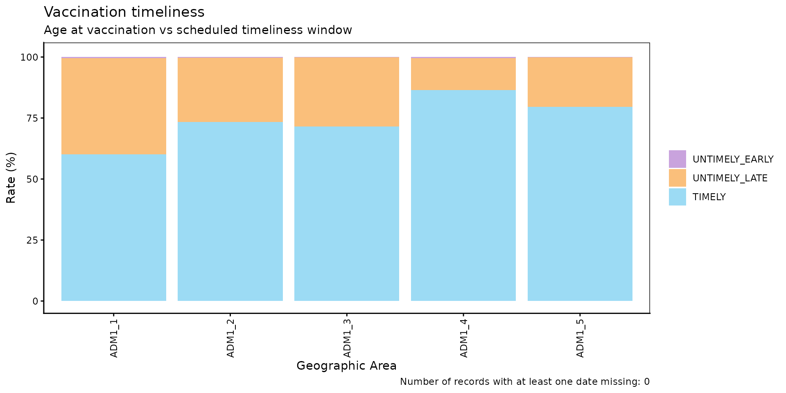
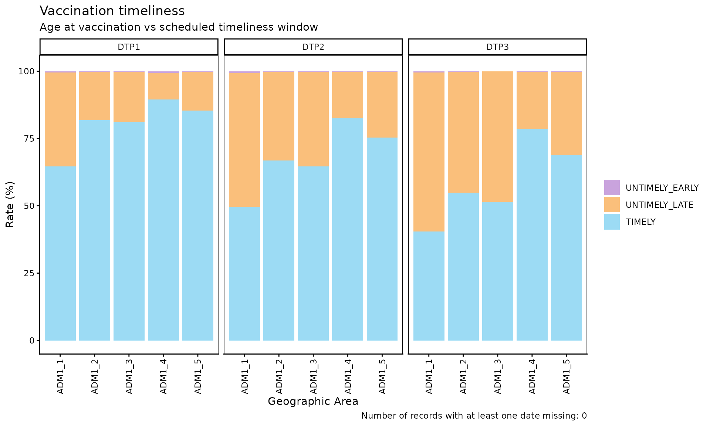
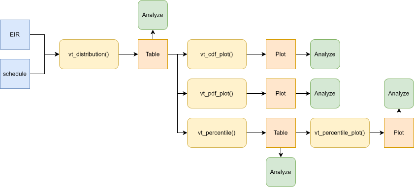
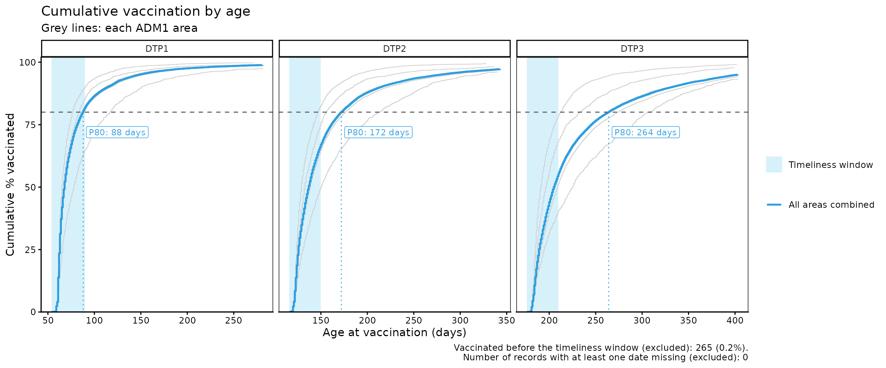
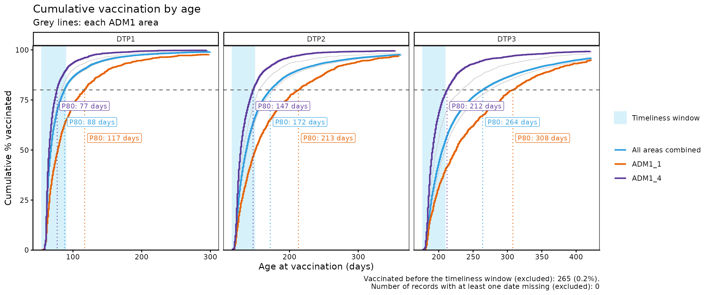
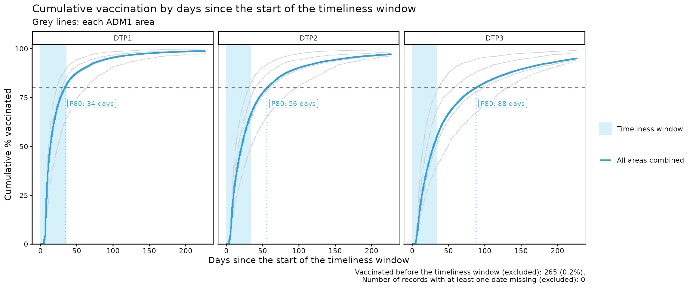
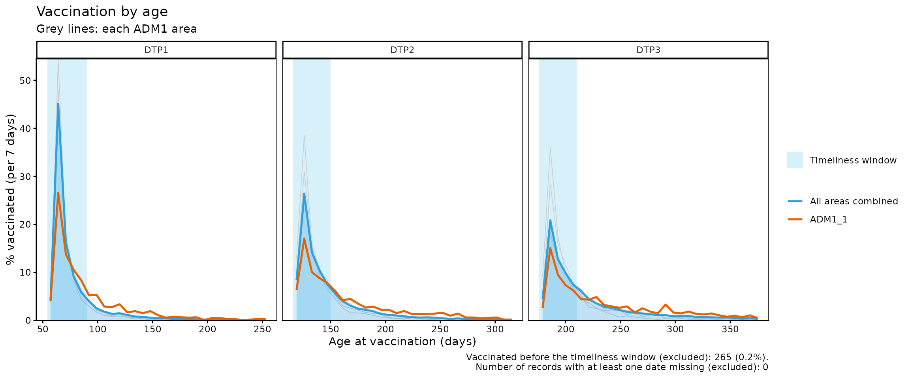
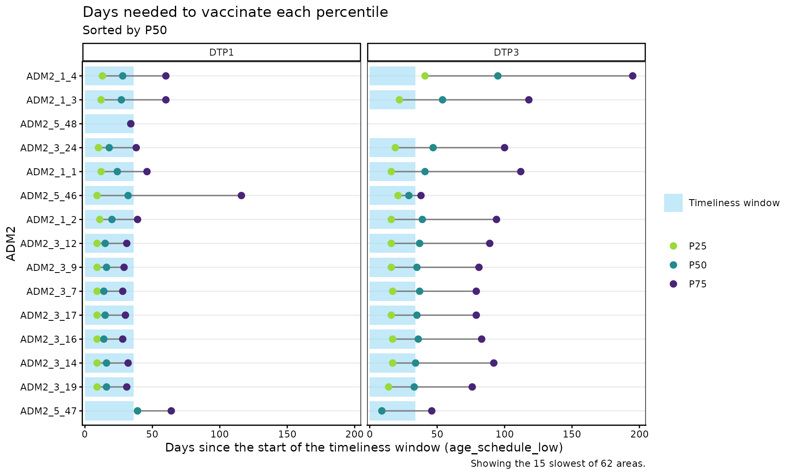

Vaccination Timeliness
PAHO/CIM
October 8, 2026
Source:vignettes/articles/en/vaccination_timeliness_en.Rmd
vaccination_timeliness_en.RmdRationale
A country’s immunization schedule is established taking into account the characteristics of each vaccine, the natural history of the disease it aims to prevent, the characteristics of the person who will receive it, the population’s access to vaccination sites, and their willingness to get vaccinated (or to have their children vaccinated).
Vaccination aims to reduce the greatest possible burden of disease by acting ahead of the period of life in which the risk of severe illness and death from that disease is highest. At the same time, the schedule must consider the vaccine’s capacity to generate immunity and the duration of that immunity, which is conditioned (especially during the first year of life) by the maturity of the immune system. These factors determine, for example, the need for more than one dose, booster doses throughout the life course, the compatibility of vaccines administered simultaneously, and the minimum intervals between doses.
To obtain the greatest benefit from the schedule established by the health authorities, compliance by the population is essential, not only by completing the schedule, but by doing so in a timely manner. Knowing vaccination timeliness, that is, how closely vaccines are administered according to the schedule, allows us to:
- understand coverage and its impact on the epidemiology of the disease,
- monitor the supply chain of vaccines and supplies,
- investigate access problems or willingness to vaccinate in certain communities, and
- through actions at different levels, prevent future dropouts.
Therefore, the objective of this indicator is to analyze vaccination timeliness in the population, that is, the time that elapses between the age of eligibility for a given vaccine dose and the occurrence of the vaccination, using nominal data from Electronic Immunization Registries (EIR).
Note
- All functions used for vaccination timeliness analyses within PAHOabc begin with the
vt_prefix.
Non-probabilistic Analysis
The non-probabilistic analysis measures the time that elapses between the age indicated for a given dose and its administration. It is based on the database of vaccinated individuals in the EIR, so it is measured retrospectively over the total number of individuals who received the dose. It estimates the proportion of individuals who receive the vaccine in a timely manner and the proportion who receive it in an untimely manner. Those who did not receive the vaccine in a timely manner are then stratified according to the time elapsed outside the timeliness window.
Operational Definitions
- Timely vaccination: vaccination administered within the time range defined by the country as the timeliness standard for each dose of a vaccine.
- Percentage of timely vaccination: proportion of the population that received a dose within its timeliness window, out of the total population that received that dose.
- Distribution by time elapsed (delay): stratification of the individuals who did not receive the dose in a timely manner, distributed into time categories defined by the country.
Required Definitions
Before carrying out the analysis, the country must define:
- Vaccines to evaluate: each vaccine dose is analyzed individually. An aggregated analysis of several doses can then be carried out.
-
Timeliness per vaccine: for each dose, the period
considered timely is defined, with a minimum and a maximum age,
according to the country’s guidelines. In PAHOabc, this period
corresponds to the
age_schedule_lowandage_schedule_highcolumns of the vaccination schedule. - Time categories: ranges of days used to distribute untimely vaccinations. The country defines the ranges, although the package includes predefined ranges.
-
Year to evaluate: it is up to the country to
analyze by birth cohort or by calendar year. The
vt_functions allow filtering by birth cohort with thebirth_cohortsparameter. - Level of geographic disaggregation: national (ADM0), first subnational level (ADM1), or second subnational level (ADM2).
- Minimum observation period: each individual included in the analysis must have at least completed the timeliness window of the dose being evaluated.
Warning
PAHOabc does not verify the minimum observation period. If birth cohorts that have not yet completed the timeliness window by the date the data were extracted are included, only those already vaccinated will appear in the EIR, which overestimates timeliness. Choose
birth_cohortsthat have had enough time to complete the timeliness window of the doses analyzed.
Characteristics of the Analysis
- It is a cross-sectional analysis: the number of days between the date of birth and the date of administration of the dose is measured and compared with the timeliness standard defined by the country. If the age at vaccination falls within the timeliness window, the dose is classified as timely; if it falls before or after it, it is classified as untimely.
- It is independent of the size of the target population: the denominator is all individuals who received the dose being evaluated.
- It requires the vaccination schedule with the specification of the timeliness standard.
- It uses the place of residence for subnational analyses.
Probabilistic Analysis
The probabilistic analysis estimates the cumulative incidence of the event “administration of a vaccine dose”, that is, the probability that a given population receives the dose as time goes by (from the moment it becomes eligible to receive it). From this curve, the probability of being vaccinated in a timely manner and the time needed to vaccinate different percentiles of the population are estimated.
Note
Ideally, this analysis considers the entire population that should receive the vaccine (for example, from the live birth registry). PAHOabc works with the database of vaccinated individuals in the EIR, that is, only with the individuals who received the dose analyzed. In this case, the final probability will always be 100%, which overestimates the real probability of vaccination of the population.
Operational Definitions
-
Timely vaccination: as in the non-probabilistic
analysis, vaccination administered within the timeliness window defined
by the country for each dose. In this analysis, day 0
(start of the observation period) corresponds to the lower limit of the
timeliness window (
age_schedule_low), and doses administered before that day are not included. - Probability of being vaccinated by day t: cumulative incidence of vaccination by day t. When t corresponds to the upper limit of the timeliness window, the probability of the population being vaccinated in a timely manner is obtained.
- Time needed to vaccinate a percentage of the population: number of days from the start of the timeliness window that it takes to vaccinate a given percentile of the population (for example, 25%, 50% and 75%).
Required Definitions
- Vaccines to evaluate: each dose is analyzed individually, since each one has its own timeliness window.
-
Timeliness per vaccine: same as in the
non-probabilistic analysis (between
age_schedule_lowandage_schedule_high). - Population percentiles: it is recommended to estimate at least the times for 25%, 50% and 75%.
- Year to evaluate: using a birth cohort is suggested. PAHOabc also allows combining several cohorts (see the warning below).
- Level of geographic disaggregation: ADM0, ADM1 or ADM2.
Warning
This analysis follows the vaccination curve well beyond the timeliness window, so the observation period needed is longer. If birth cohorts that have not completed that observation period by the date the data were extracted are included, only those vaccinated before that date will appear in the EIR. Those vaccinated afterwards do not appear yet, so the curve may show faster vaccination than is really the case. To mitigate this, choose birth cohorts that have completed the observation period, or exclude incomplete cohorts.
Characteristics of the Analysis
- It is a cumulative incidence analysis, which corresponds to the complement of the Kaplan-Meier survival function. Kaplan-Meier estimates the probability that an event does not happen over time; its complement gives the probability that it does happen, in this case, vaccination.
- Time is counted from the moment the individual becomes eligible for
the dose (from
age_schedule_low). All those vaccinated up to the upper limit of the timeliness window are considered timely. - It is independent of the size of the population: the denominator is the total number of records included in the analysis.
- It requires the vaccination schedule with the definition of the timeliness window of each dose.
- It uses the place of residence for subnational analyses.
Calculation of the Indicator
The cumulative incidence of vaccination by day t is the complement of the Kaplan-Meier survival function:
where is the probability of having been vaccinated by day t and is the probability of not having been vaccinated by day t. Since the EIR only contains vaccinated individuals (there is no censoring), is simply the cumulative percentage of records vaccinated by day t:
Note
Records vaccinated before the timeliness window (before day 0) and those with a missing date are excluded from both the numerator and the denominator, and are reported separately. Therefore, evaluated on the last day of the timeliness window is not equal to the
TIMELYpercentage ofvt_rate(), which does include those vaccinated before the window in its denominator.
Glossary
Political Geographic Boundaries
Throughout this vignette, we will make reference to different levels of political geographic boundaries. These levels are defined by the country/territory and can have different names from country to country. PAHOabc is agnostic to these names and requires the user to recode their variable names to fit the PAHOabc structure.
Namely, PAHOabc can distinguish three administrative levels, which listed from top to bottom level are: ADM0, ADM1 and ADM2.
- ADM0: The country. This is the top-most administrative level.
- ADM1: The first geographic subdivision in the country. ADM0 contains several ADM1 subdivisions.
- ADM2: The second geographic subdivision in the country. Each ADM1 contains several ADM2 subdivisions.
Timeliness Categories
| Category | Meaning |
|---|---|
TIMELY |
The age at vaccination falls within
[age_schedule_low, age_schedule_high]. |
UNTIMELY_EARLY |
The age at vaccination is lower than age_schedule_low
(before the timeliness window). |
UNTIMELY_LATE |
The age at vaccination is greater than
age_schedule_high (after the timeliness window). |
DATE_MISSING |
date_vax or date_birth is
NA. |
Usage
Load Data
The functions in this module require your EIR dataset and a vaccination schedule with the timeliness windows, both in the standard PAHOabc format.
EIR
The pahoabc::pahoabc.EIR data frame provides a
simulated, nominal-level table representing individual vaccination
events from an EIR. Each row corresponds to a single vaccination act for
a person.
pahoabc.EIR %>% head() %>% kable(caption = "Example Electronic Immunization Registry")| ID | date_birth | date_vax | ADM1_residence | ADM2_residence | ADM1_occurrence | ADM2_occurrence | dose |
|---|---|---|---|---|---|---|---|
| 191997 | 2023-08-08 | 2023-12-26 | ADM1_4 | ADM2_4_35 | ADM1_4 | ADM2_4_35 | DTP2 |
| 212189 | 2023-12-20 | 2023-12-26 | ADM1_5 | ADM2_5_61 | ADM1_5 | ADM2_5_61 | BCG RN |
| 118063 | 2022-09-15 | 2023-12-26 | ADM1_2 | ADM2_2_5 | ADM1_2 | ADM2_2_5 | DTP1 |
| 118063 | 2022-09-15 | 2023-12-26 | ADM1_2 | ADM2_2_5 | ADM1_2 | ADM2_2_5 | YFV1 |
| 130751 | 2022-10-27 | 2023-12-12 | ADM1_5 | ADM2_5_55 | ADM1_5 | ADM2_5_55 | YFV1 |
| 136532 | 2021-09-21 | 2023-12-26 | ADM1_3 | ADM2_3_12 | ADM1_3 | ADM2_3_12 | SRP1 |
-
ID: Unique person identification number. -
date_birth: Date of birth of person. -
date_vax: Date of vaccination event. -
ADM1_residence/ADM2_residence: First and second geographic administrative levels of residence. -
dose: Combined variable representing vaccine type and dose number (e.g., DTP1).
Warning
- The functions in this module calculate age at vaccination as
date_vax - date_birth. Ifdata.EIRcontains records wheredate_vaxoccurs beforedate_birth(i.e., a negative age at vaccination), this points to a date consistency error. When this happens,vt_functions will emit a warning directing you to the Date Consistency Comparison module to identify and resolve those records first.- The functions in this module count vaccination records, not individuals. If
data.EIRcontains duplicate records (the sameIDanddoseregistered more than once), that individual is counted more than once in both the numerator and the denominator. PAHOabc does not remove duplicates, so make sure to remove them before running the analysis. Note that it is up to you to decide which record to keep for eachIDanddose(e.g., the one with the earliestdate_vax).
Vaccination Schedule
The pahoabc::pahoabc.schedule dataset defines the
national immunization schedule, listing for each vaccine dose its age of
administration and its timeliness window, in days.
pahoabc.schedule %>% kable(caption = "Example Immunization Schedule with timeliness windows")| dose | age_schedule | age_schedule_low | age_schedule_high |
|---|---|---|---|
| SRP1 | 365 | 360 | 420 |
| DTP1 | 60 | 54 | 90 |
| DTP2 | 120 | 116 | 150 |
| DTP3 | 180 | 176 | 210 |
| BCG RN | 0 | 0 | 28 |
| YFV1 | 365 | 360 | 420 |
-
dose: Combined variable representing vaccine type and dose number. -
age_schedule: The age of administration of the correspondingdose, in days. -
age_schedule_low: The minimum age of the timeliness window, in days. -
age_schedule_high: The maximum age of the timeliness window, in days.
For example, in this schedule DTP1 is indicated at 60 days of age and is considered timely if administered between 54 and 90 days of age.
Non-probabilistic Analysis
Expected Workflow
The functions for the non-probabilistic analysis are:
-
vt_rate(): computes the percentage of timely vaccination, pooled across several doses or disaggregated by dose, and by geographic level. -
vt_barplot(): visualizes the output ofvt_rate()as a stacked bar chart. -
vt_inconsistent(): lists individual untimely and missing-date records, also indicating the number of days outside the timeliness window. -
vt_inconsistent_plot(): visualizes the distribution of untimely doses by the number of days outside the timeliness window.

Note
- The examples below analyze the 2022 birth cohort. The example data includes vaccinations up to December 31, 2023, so this cohort has completed the timeliness window of the doses administered during the first year of life.
- Filtering by
birth_cohortsexcludes records with no date of birth, so in that caseDATE_MISSINGonly counts records missing the date of vaccination.
Step 1 — Compute the indicator with vt_rate()
vt_rate() compares the age at vaccination against the
timeliness window of each dose and returns the number (n)
and percentage (rate) of records that are
TIMELY, UNTIMELY_EARLY,
UNTIMELY_LATE, or DATE_MISSING, out of the
total number of records (total).
By default, vaccines = NULL pools all doses in
data.schedule into a single indicator. Here we compute the
pooled indicator at the ADM1 level:
rate_df <- vt_rate(
data.EIR = pahoabc.EIR,
data.schedule = pahoabc.schedule,
geo_level = "ADM1",
birth_cohorts = 2022
)
rate_df %>% kable(digits = 2, caption = "Vaccination timeliness pooled by ADM1, 2022 cohort")| ADM1 | timeliness | n | total | rate |
|---|---|---|---|---|
| ADM1_1 | TIMELY | 3710 | 6167 | 60.16 |
| ADM1_1 | UNTIMELY_EARLY | 31 | 6167 | 0.50 |
| ADM1_1 | UNTIMELY_LATE | 2426 | 6167 | 39.34 |
| ADM1_2 | TIMELY | 23955 | 32632 | 73.41 |
| ADM1_2 | UNTIMELY_EARLY | 81 | 32632 | 0.25 |
| ADM1_2 | UNTIMELY_LATE | 8596 | 32632 | 26.34 |
| ADM1_3 | TIMELY | 103604 | 144709 | 71.59 |
| ADM1_3 | UNTIMELY_EARLY | 281 | 144709 | 0.19 |
| ADM1_3 | UNTIMELY_LATE | 40824 | 144709 | 28.21 |
| ADM1_4 | TIMELY | 18769 | 21712 | 86.45 |
| ADM1_4 | UNTIMELY_EARLY | 85 | 21712 | 0.39 |
| ADM1_4 | UNTIMELY_LATE | 2858 | 21712 | 13.16 |
| ADM1_5 | TIMELY | 9014 | 11323 | 79.61 |
| ADM1_5 | UNTIMELY_EARLY | 23 | 11323 | 0.20 |
| ADM1_5 | UNTIMELY_LATE | 2286 | 11323 | 20.19 |
Specifying vaccines disaggregates the results by
dose:
rate_by_dose_df <- vt_rate(
data.EIR = pahoabc.EIR,
data.schedule = pahoabc.schedule,
geo_level = "ADM1",
vaccines = c("DTP1", "DTP2", "DTP3"),
birth_cohorts = 2022
)
rate_by_dose_df %>% head(10) %>% kable(digits = 2, caption = "Vaccination timeliness by dose and ADM1, 2022 cohort")| dose | ADM1 | timeliness | n | total | rate |
|---|---|---|---|---|---|
| DTP1 | ADM1_1 | TIMELY | 767 | 1187 | 64.62 |
| DTP1 | ADM1_1 | UNTIMELY_EARLY | 5 | 1187 | 0.42 |
| DTP1 | ADM1_1 | UNTIMELY_LATE | 415 | 1187 | 34.96 |
| DTP1 | ADM1_2 | TIMELY | 4963 | 6065 | 81.83 |
| DTP1 | ADM1_2 | UNTIMELY_EARLY | 16 | 6065 | 0.26 |
| DTP1 | ADM1_2 | UNTIMELY_LATE | 1086 | 6065 | 17.91 |
| DTP1 | ADM1_3 | TIMELY | 22380 | 27587 | 81.13 |
| DTP1 | ADM1_3 | UNTIMELY_EARLY | 53 | 27587 | 0.19 |
| DTP1 | ADM1_3 | UNTIMELY_LATE | 5154 | 27587 | 18.68 |
| DTP1 | ADM1_4 | TIMELY | 3418 | 3818 | 89.52 |
Parameters accepted
-
data.EIR: EIR data frame in PAHOabc format. -
data.schedule: Vaccination schedule data frame in PAHOabc format. -
geo_level:"ADM0"(default),"ADM1", or"ADM2". -
vaccines: Character vector of doses to include, disaggregating results bydose. DefaultNULLpools all doses indata.schedule. -
birth_cohorts: Numeric vector of birth cohort year(s) to include. DefaultNULLuses all available cohorts.
Step 2 — Visualize the indicator with vt_barplot()
The output of vt_rate() can be passed directly to
vt_barplot() to produce a stacked bar chart. If the data is
disaggregated by dose, the plot is automatically faceted by
dose.
vt_barplot(data = rate_df)
vt_barplot(data = rate_by_dose_df)
Parameters accepted
-
data: Output ofvt_rate(). -
within_ADM1: Character vector to filter to specific ADM1 units whengeo_level = "ADM2". Default:NULL. -
plot_missing: Boolean. IfTRUE(default),DATE_MISSINGrecords are shown as a separate bar segment so all bars sum to 100%.
Interpretation
Each bar represents a geographic unit and is divided into segments:
TIMELY (blue), UNTIMELY_LATE (orange),
UNTIMELY_EARLY (purple), and DATE_MISSING
(grey). Bars with a larger orange share indicate units where a large
share of doses are administered after the timeliness window, a signal
worth investigating for possible access, willingness to vaccinate, or
supply issues in those units. A large purple share, on the other hand,
can point to data entry errors or problems in how the schedule is
applied.
Note
No grey segment appears because filtering by the 2022 cohort excluded records with no date of birth, and no records in this cohort are missing the date of vaccination.
Step 3 — Inspect individual untimely records with
vt_inconsistent()
vt_inconsistent() returns a record-level table of all
UNTIMELY_EARLY, UNTIMELY_LATE and
DATE_MISSING doses, including the number of days outside
the timeliness window.
Note
In this example we do not filter by birth cohort, because doing so would exclude records with no date of birth.
inconsistent_df <- vt_inconsistent(
data.EIR = pahoabc.EIR,
data.schedule = pahoabc.schedule,
vaccines = "DTP1"
)
inconsistent_df %>%
# shows up to 2 records of each type: UNTIMELY_EARLY, UNTIMELY_LATE and DATE_MISSING
group_by(timeliness) %>%
slice_head(n = 2) %>%
ungroup() %>%
kable(caption = "Sample of untimely and missing-date DTP1 records")| ID | dose | date_birth | date_vax | age_at_vax | age_schedule_low | age_schedule_high | days_outside_range | timeliness |
|---|---|---|---|---|---|---|---|---|
| 71494 | DTP1 | NA | 2022-04-11 | NA | 54 | 90 | NA | DATE_MISSING |
| 86449 | DTP1 | NA | 2022-06-08 | NA | 54 | 90 | NA | DATE_MISSING |
| 90277 | DTP1 | 2022-02-28 | 2022-03-29 | 29 | 54 | 90 | -25 | UNTIMELY_EARLY |
| 91058 | DTP1 | 2022-03-13 | 2022-05-03 | 51 | 54 | 90 | -3 | UNTIMELY_EARLY |
| 118063 | DTP1 | 2022-09-15 | 2023-12-26 | 467 | 54 | 90 | 377 | UNTIMELY_LATE |
| 187807 | DTP1 | 2023-07-19 | 2023-12-26 | 160 | 54 | 90 | 70 | UNTIMELY_LATE |
Parameters accepted
-
data.EIR: EIR data frame in PAHOabc format. -
data.schedule: Vaccination schedule data frame in PAHOabc format. -
vaccines: Character vector of doses to include. DefaultNULLincludes all doses indata.schedule. -
birth_cohorts: Numeric vector of birth cohort year(s) to include. DefaultNULLuses all available cohorts.
The days_outside_range column is negative when a person
was vaccinated before age_schedule_low, and positive when
vaccinated after age_schedule_high (NA when a
date is missing). This table can be exported for record-level
follow-up.
Step 4 — Visualize the distribution by time elapsed with
vt_inconsistent_plot()
vt_inconsistent_plot() produces a plot of untimely
doses, grouped by the number of days outside the timeliness window.
Doses administered after the timeliness window and before it are shown
in separate rows, each with its own y-axis scale.
vt_inconsistent_plot(
data.EIR = pahoabc.EIR,
data.schedule = pahoabc.schedule,
vaccines = "DTP1",
birth_cohorts = 2022
)
When more than one vaccine is specified, the plot adds one column per dose. Within each row, all doses share the same scale, so they can be compared with each other:
vt_inconsistent_plot(
data.EIR = pahoabc.EIR,
data.schedule = pahoabc.schedule,
vaccines = c("DTP1", "DTP2", "DTP3"),
birth_cohorts = 2022
)
Parameters accepted
-
data.EIR: EIR data frame in PAHOabc format. -
data.schedule: Vaccination schedule data frame in PAHOabc format. -
vaccines: Character vector of doses to include, adding one column perdose. DefaultNULLpools the results of all doses into a single column. -
birth_cohorts: Numeric vector of birth cohort year(s) to include. DefaultNULLuses all available cohorts. -
day_groups: Defines the categories on the horizontal axis. It is a list ofc(lower, upper)numeric pairs defining the lower and upper limits of each category, in days. Categories must start at 0 and be contiguous (each one starts where the previous one ends). The last category always extends to the maximum value in the data and is labeled"X+". Default: 10-day groups from 0 up to 90+ days.
Time categories are defined by each country. For example, to use the categories 0 to 39 days, 40 to 49 days, 50 to 59 days, 60 to 89 days, and 90 days or more:
vt_inconsistent_plot(
data.EIR = pahoabc.EIR,
data.schedule = pahoabc.schedule,
vaccines = c("DTP1", "DTP2", "DTP3"),
birth_cohorts = 2022,
day_groups = list(c(0, 40), c(40, 50), c(50, 60), c(60, 90), c(90, 120))
)
Interpretation
The top row represents doses administered after the timeliness window (delay), while the bottom row shows doses administered before the minimum age. Since each row has its own scale, only compare columns within the same row, and use the summary in the plot caption to compare between rows. The distribution of the data will let you assess where delays are concentrated, for example: are the delays only a few days long, or are most of them concentrated in delays of several months? Likewise, doses administered before the minimum age can point to data entry errors or problems in how the schedule is applied.
Probabilistic Analysis
Expected Workflow
The functions for the probabilistic analysis are:
-
vt_distribution(): computes, for each day since the start of the timeliness window, the percentage of records vaccinated on that day and the cumulative percentage (cumulative incidence). Results are disaggregated by dose and, optionally, by geographic level. -
vt_cdf_plot()andvt_pdf_plot(): visualize the output ofvt_distribution()as a cumulative incidence curve (similar to a Kaplan-Meier curve) or as a curve of the percentage vaccinated per day, respectively. -
vt_percentile(): from the output ofvt_distribution(), computes the number of days needed to vaccinate different percentiles of the population. -
vt_percentile_plot(): generates visualizations from the output ofvt_percentile().

Note
As in the non-probabilistic analysis, the examples below analyze the 2022 birth cohort. Since the example data only include vaccinations up to December 31, 2023, very late vaccinations of this cohort are not observed yet.
Step 1 — Compute the distribution with
vt_distribution()
vt_distribution() computes the age at vaccination and
expresses it as days since the start of the timeliness window (where day
0 corresponds to age_schedule_low). By default,
vaccines = NULL includes all doses in
data.schedule:
dist_df <- vt_distribution(
data.EIR = pahoabc.EIR,
data.schedule = pahoabc.schedule,
birth_cohorts = 2022
)
dist_df %>% head(10) %>% kable(digits = 2, caption = "Distribution of vaccinations by day and dose, 2022 cohort")| dose | day | age | n | cum_n | cdf | n_at_risk | total | n_early | n_missing | window_end | age_schedule_low | |
|---|---|---|---|---|---|---|---|---|---|---|---|---|
| BCG RN | 0 | 0 | 3953 | 9.43 | 3953 | 9.43 | 41899 | 41899 | 158 | 0 | 28 | 0 |
| BCG RN | 1 | 1 | 15851 | 37.83 | 19804 | 47.27 | 37946 | 41899 | 158 | 0 | 28 | 0 |
| BCG RN | 2 | 2 | 6254 | 14.93 | 26058 | 62.19 | 22095 | 41899 | 158 | 0 | 28 | 0 |
| BCG RN | 3 | 3 | 2360 | 5.63 | 28418 | 67.83 | 15841 | 41899 | 158 | 0 | 28 | 0 |
| BCG RN | 4 | 4 | 1602 | 3.82 | 30020 | 71.65 | 13481 | 41899 | 158 | 0 | 28 | 0 |
| BCG RN | 5 | 5 | 1341 | 3.20 | 31361 | 74.85 | 11879 | 41899 | 158 | 0 | 28 | 0 |
| BCG RN | 6 | 6 | 1145 | 2.73 | 32506 | 77.58 | 10538 | 41899 | 158 | 0 | 28 | 0 |
| BCG RN | 7 | 7 | 1009 | 2.41 | 33515 | 79.99 | 9393 | 41899 | 158 | 0 | 28 | 0 |
| BCG RN | 8 | 8 | 610 | 1.46 | 34125 | 81.45 | 8384 | 41899 | 158 | 0 | 28 | 0 |
| BCG RN | 9 | 9 | 634 | 1.51 | 34759 | 82.96 | 7774 | 41899 | 158 | 0 | 28 | 0 |
With vaccines you can select the doses to analyze, and
with geo_level disaggregate them geographically:
dist_by_dose_ADM1_df <- vt_distribution(
data.EIR = pahoabc.EIR,
data.schedule = pahoabc.schedule,
geo_level = "ADM1",
vaccines = c("DTP1", "DTP2", "DTP3"),
birth_cohorts = 2022
)
dist_by_dose_ADM1_df %>% head(10) %>% kable(digits = 2, caption = "Distribution of vaccinations by day, dose and ADM1, 2022 cohort")| dose | ADM1 | day | age | n | cum_n | cdf | n_at_risk | total | n_early | n_missing | window_end | age_schedule_low | |
|---|---|---|---|---|---|---|---|---|---|---|---|---|---|
| DTP1 | ADM1_1 | 0 | 54 | 1 | 0.08 | 1 | 0.08 | 1182 | 1182 | 5 | 0 | 36 | 54 |
| DTP1 | ADM1_1 | 2 | 56 | 1 | 0.08 | 2 | 0.17 | 1181 | 1182 | 5 | 0 | 36 | 54 |
| DTP1 | ADM1_1 | 3 | 57 | 2 | 0.17 | 4 | 0.34 | 1180 | 1182 | 5 | 0 | 36 | 54 |
| DTP1 | ADM1_1 | 4 | 58 | 3 | 0.25 | 7 | 0.59 | 1178 | 1182 | 5 | 0 | 36 | 54 |
| DTP1 | ADM1_1 | 5 | 59 | 26 | 2.20 | 33 | 2.79 | 1175 | 1182 | 5 | 0 | 36 | 54 |
| DTP1 | ADM1_1 | 6 | 60 | 16 | 1.35 | 49 | 4.15 | 1149 | 1182 | 5 | 0 | 36 | 54 |
| DTP1 | ADM1_1 | 7 | 61 | 53 | 4.48 | 102 | 8.63 | 1133 | 1182 | 5 | 0 | 36 | 54 |
| DTP1 | ADM1_1 | 8 | 62 | 54 | 4.57 | 156 | 13.20 | 1080 | 1182 | 5 | 0 | 36 | 54 |
| DTP1 | ADM1_1 | 9 | 63 | 40 | 3.38 | 196 | 16.58 | 1026 | 1182 | 5 | 0 | 36 | 54 |
| DTP1 | ADM1_1 | 10 | 64 | 45 | 3.81 | 241 | 20.39 | 986 | 1182 | 5 | 0 | 36 | 54 |
The table contains one row per dose and day (as long as at least one vaccination occurred), with the following columns:
-
dose: the dose. -
day: days since the start of the timeliness window (fromage_schedule_low). -
nandpdf: number and percentage of records vaccinated on that day. -
cum_nandcdf: cumulative number and percentage of records vaccinated up to that day (cumulative incidence). -
n_at_risk: number of records not yet vaccinated at the start of that day (population “at risk”). -
total: denominator, that is, all records vaccinated from day 0 onwards. -
n_early: records vaccinated before the timeliness window, excluded from the analysis. -
n_missing: records with a missing date, excluded from the analysis. -
window_end: last day of the timeliness window (age_schedule_high - age_schedule_low). -
age: age at vaccination (in days). -
age_schedule_low: lower limit of the timeliness window according todata.schedule(in days).
Parameters accepted
-
data.EIR: EIR table in PAHOabc format. -
data.schedule: Vaccination schedule table in PAHOabc format. -
geo_level:"ADM0"(default),"ADM1", or"ADM2". -
vaccines: Character vector with the doses to include. -
birth_cohorts: Numeric vector with the birth cohort(s) to include. The defaultNULLuses all available cohorts.
Step 2 — Visualize the distribution with vt_cdf_plot()
and vt_pdf_plot()
The output of vt_distribution() can be passed directly
to vt_cdf_plot(), which plots the cumulative incidence
curve. The percentile parameter adds a line and a label
with the number of days needed to reach that percentile:
vt_cdf_plot(data = dist_df, percentile = 50)
The plot is organized in panels by dose and the timeliness window of
each one is shaded. By default, x_axis = "absolute", which
means that the x-axis shows the age at vaccination (in days). If the
data is disaggregated by subnational levels, each geographic area is
shown as a thin grey line, which serves as context, and all areas
together are shown as a single highlighted line. This way, the plot
remains readable even with tens or hundreds of geographic areas:
vt_cdf_plot(data = dist_by_dose_ADM1_df, percentile = 80)
With the highlight parameter you can highlight up to 5
geographic areas in color to compare them with all areas combined:
vt_cdf_plot(data = dist_by_dose_ADM1_df, percentile = 80, highlight = c("ADM1_1", "ADM1_4"))
With x_axis = "relative", the x-axis shows the days
since the start of the timeliness window instead, so all panels start at
0, which makes it easier to compare doses with each other:
vt_cdf_plot(data = dist_by_dose_ADM1_df, percentile = 80, x_axis = "relative")
Parameters accepted by vt_cdf_plot()
-
data: Output ofvt_distribution(). -
percentile: A single percentile (greater than 0 and at most 100) to highlight in the plot, for all areas combined and for each area inhighlight. Default:NULL(none). -
highlight: Character vector with up to 5 geographic areas (at the geographic level ofdata) to highlight in color. Only available if the data is disaggregated by ADM1 or ADM2. Default:NULL(none). -
within_ADM1: Character vector to filter specific ADM1 units whengeo_level = "ADM2". Default:NULL. -
max_days: Maximum number of days since the start of the timeliness window to show on the x-axis. The default (NULL) shows up to the day by which 95% of the records have been vaccinated, so that a few very late vaccinations (or vaccinations with date errors) do not stretch the axis. -
x_axis:"absolute"(default) shows the age at vaccination (in days);"relative"shows, for each dose, the days elapsed since the start of the timeliness window.
vt_pdf_plot() plots the percentage of records vaccinated
on each day (or in a group of days, set by the binwidth
parameter), which lets you see when vaccinations are concentrated:
dist_by_dose_ADM0_df <- vt_distribution(
data.EIR = pahoabc.EIR,
data.schedule = pahoabc.schedule,
vaccines = c("DTP1", "DTP2", "DTP3"),
birth_cohorts = 2022
)
vt_pdf_plot(data = dist_by_dose_ADM0_df, percentile = 50, max_days = 150)
vt_pdf_plot(data = dist_by_dose_ADM1_df, binwidth = 7, highlight = "ADM1_1", max_days = 200)
Note
In this last plot with geographic areas, areas with few records can show very high daily percentages. That is why the y-axis is limited to the highlighted lines, and grey lines that exceed that limit are cut.
Parameters accepted by vt_pdf_plot()
It accepts the same parameters as vt_cdf_plot(), and
additionally accepts:
-
binwidth: Number of days represented by each point of the curve (for example, 7 to group by week). In the case of geographic areas with few records, larger values could lead to smoother curves. Default: 1.
Interpretation
Both plots are complementary: in the cumulative incidence curve
(cdf), curves that rise quickly indicate vaccination close
to the start of the timeliness window, while curves that rise slowly, or
that have an important stretch to the right of the shaded area, indicate
delays. The same can be seen in the curve of the percentage vaccinated
per day (pdf), which directly shows the distribution of
vaccinations over time.
The caption of both plots indicates how many records were excluded
for having been vaccinated before the timeliness window or for having a
missing date. A large number of vaccinations before the window can point
to data entry errors or problems in how the schedule is applied; to
review them, use vt_inconsistent() and
vt_inconsistent_plot().
Warning
Remember that, when working only with vaccinated individuals, all curves end at 100%. This does not mean that the entire target population has been vaccinated, but that the analysis was carried out only with records of vaccinated individuals.
Step 3 — Compute the percentiles with
vt_percentile()
vt_percentile() takes the output of
vt_distribution() and computes, for each percentile, the
number of days needed to reach it. The results keep the same
disaggregation as vt_distribution() (by dose and geographic
level):
vt_percentile(data = dist_df) %>%
kable(caption = "Days needed to vaccinate 25%, 50% and 75%, by dose, 2022 cohort")| dose | percentile | day | age | within_window | window_end | total |
|---|---|---|---|---|---|---|
| BCG RN | 25 | 1 | 1 | TRUE | 28 | 41899 |
| BCG RN | 50 | 2 | 2 | TRUE | 28 | 41899 |
| BCG RN | 75 | 6 | 6 | TRUE | 28 | 41899 |
| DTP1 | 25 | 9 | 63 | TRUE | 36 | 40556 |
| DTP1 | 50 | 14 | 68 | TRUE | 36 | 40556 |
| DTP1 | 75 | 28 | 82 | TRUE | 36 | 40556 |
| DTP2 | 25 | 10 | 126 | TRUE | 34 | 38393 |
| DTP2 | 50 | 21 | 137 | TRUE | 34 | 38393 |
| DTP2 | 75 | 45 | 161 | FALSE | 34 | 38393 |
| DTP3 | 25 | 13 | 189 | TRUE | 34 | 36727 |
| DTP3 | 50 | 29 | 205 | TRUE | 34 | 36727 |
| DTP3 | 75 | 70 | 246 | FALSE | 34 | 36727 |
| SRP1 | 25 | 17 | 377 | TRUE | 60 | 31047 |
| SRP1 | 50 | 33 | 393 | TRUE | 60 | 31047 |
| SRP1 | 75 | 69 | 429 | FALSE | 60 | 31047 |
| YFV1 | 25 | 18 | 378 | TRUE | 60 | 27420 |
| YFV1 | 50 | 37 | 397 | TRUE | 60 | 27420 |
| YFV1 | 75 | 78 | 438 | FALSE | 60 | 27420 |
vt_percentile(data = dist_by_dose_ADM1_df, percentiles = c(50, 80)) %>%
head(10) %>%
kable(caption = "Days needed to vaccinate 50% and 80%, by dose and ADM1, 2022 cohort")| dose | ADM1 | percentile | day | age | within_window | window_end | total |
|---|---|---|---|---|---|---|---|
| DTP1 | ADM1_1 | 50 | 24 | 78 | TRUE | 36 | 1182 |
| DTP1 | ADM1_1 | 80 | 63 | 117 | FALSE | 36 | 1182 |
| DTP1 | ADM1_2 | 50 | 14 | 68 | TRUE | 36 | 6049 |
| DTP1 | ADM1_2 | 80 | 34 | 88 | TRUE | 36 | 6049 |
| DTP1 | ADM1_3 | 50 | 14 | 68 | TRUE | 36 | 27534 |
| DTP1 | ADM1_3 | 80 | 35 | 89 | TRUE | 36 | 27534 |
| DTP1 | ADM1_4 | 50 | 11 | 65 | TRUE | 36 | 3792 |
| DTP1 | ADM1_4 | 80 | 23 | 77 | TRUE | 36 | 3792 |
| DTP1 | ADM1_5 | 50 | 13 | 67 | TRUE | 36 | 1999 |
| DTP1 | ADM1_5 | 80 | 29 | 83 | TRUE | 36 | 1999 |
The within_window column indicates whether the
percentile is reached within the timeliness window of the dose.
Parameters accepted
-
data: Output ofvt_distribution(). -
percentiles: Numeric vector with the percentiles to compute. Default:c(25, 50, 75).
Interpretation
A larger number of days to reach the same percentile indicates later vaccination. For example, if in one geographic area 50% of the records are vaccinated within the first 10 days and in another it takes 40 days, the second one shows delays that warrant investigating possible problems of access, willingness to vaccinate, or supply.
Step 4 — Compare percentiles between geographic areas with
vt_percentile_plot()
The output of vt_percentile() can be passed directly to
vt_percentile_plot(), which shows one row per geographic
area (or per dose, if the data is not disaggregated geographically).
Each percentile is drawn as a point, joined by a line from the lowest to
the highest percentile. Rows are sorted according to the median (or the
closest percentile). Finally, the timeliness window of each dose is
shaded.
vt_percentile(data = dist_by_dose_ADM1_df, percentiles = c(25, 50, 75, 90)) %>%
vt_percentile_plot()
Without geographic disaggregation, one row per dose is shown:
vt_percentile(data = dist_by_dose_ADM0_df, percentiles = c(25, 50, 75, 90)) %>%
vt_percentile_plot()
When there are many geographic areas (for example, at the ADM2
level), the n_slowest parameter lets you show only the
slowest areas:
vt_distribution(
data.EIR = pahoabc.EIR,
data.schedule = pahoabc.schedule,
# at the ADM2 level there are many geographic areas
geo_level = "ADM2",
vaccines = c("DTP1", "DTP3"),
birth_cohorts = 2022
) %>%
vt_percentile() %>%
# show only the 15 slowest
vt_percentile_plot(n_slowest = 15)
Parameters accepted
-
data: Output ofvt_percentile(). -
within_ADM1: Character vector to filter specific ADM1 units whengeo_level = "ADM2". Default:NULL. -
n_slowest: Number of geographic areas to show, starting with the slowest. Default:NULL(that is, all).
Interpretation
The areas at the top of the plot are the ones that take the longest to vaccinate half of their records. Points to the right of the shaded area indicate that the percentile is reached outside the timeliness window, and a long line between the lowest and the highest percentile indicates that vaccination is very spread out over time.
Warning
Geographic areas with few records can show extreme percentiles just by chance. Before concluding that a certain geographic area is vaccinating slowly, check its number of records in the
totalcolumn ofvt_percentile().
Summary
This module allows you to estimate the vaccination timeliness
indicator from EIR data. In the non-probabilistic
analysis, vt_rate() and vt_barplot() return
the percentage of timely vaccination with different geographic or
dose-level disaggregations; vt_inconsistent() lets you
generate a list of the records detected as untimely or missing
vaccination/birth dates; and vt_inconsistent_plot()
characterizes the distribution of untimely records by days outside the
timeliness window.
In the probabilistic analysis,
vt_distribution(), vt_cdf_plot() and
vt_pdf_plot() describe how vaccinations accumulate as days
go by since the start of the timeliness window,
vt_percentile() estimates how many days are needed to
vaccinate different percentiles of the population, and
vt_percentile_plot() lets you visually compare those times
between geographic areas.
Together, these tools help immunization programs understand their coverage, identify communities with access problems or low willingness to vaccinate, and guide actions to prevent future dropouts.